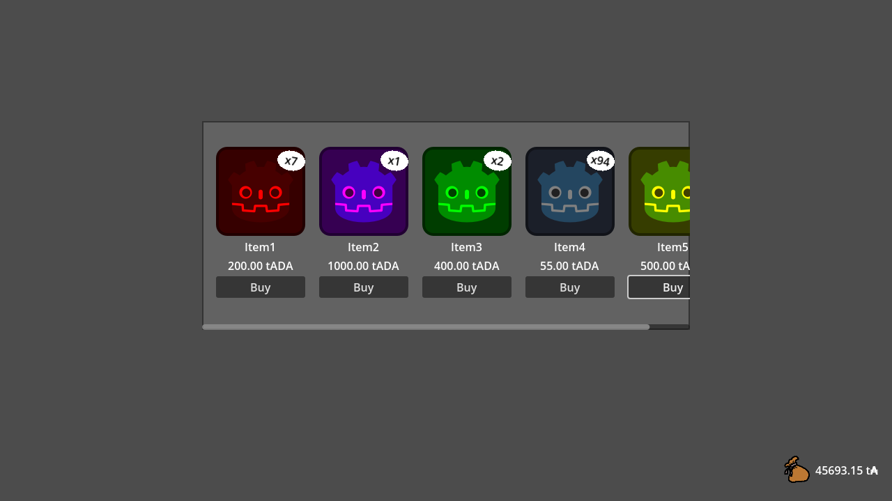
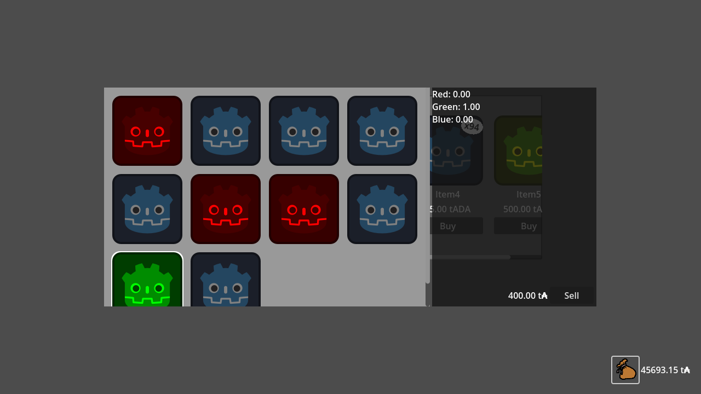

Shop tutorial
Introduction
Overview
godot-cardano is a Software Development Kt (SDK) for developing Cardano applications within the Godot engine. The framework is aimed at game developers looking to build decentralized games making use of the Cardano ledger, Cardano native tokens (CNTs), and the Plutus smart contract language. The SDK is distributed as an add-on including a binary library built with Cardano Serialization Lib and Aiken, and a collection of GDScript classes, which can be downloaded together from the releases page of the GitHub repository.
The SDK provides a framework similar to Lucid with which developers can create Cardano wallets for users, query the ledger state, send and receive ADA and CNTs, and employ Plutus scripts for locking and minting assets.
godot-cardano puts particular emphasis on developing decentralized games by enabling developers to build and evaluate transactions entirely within the Godot engine and the provided library, as well as by providing an interface for configuring, minting and spending CNTs based on the CIP68 metadata standard.
This document aims to introduce developers to the features of the framework mentioned above by working through an example, the code for which is provided in full in the GitHub repository as the shop-demo project. The example itself is too long to be presented in its entirety, so the document is split into four sections: the first three dealing with the main concepts and classes, and the last dealing with how to initialize the main components.
This document assumes some familiarity with Cardano and the “eUTXOma” ledger it uses (Extended, Multi-Asset UTxO model). For this reason, it is not a good introduction to the Cardano blockchain and its scripting capabilities and concepts (validators, minting policies, redeemers, datums, etc). It also assumes some basic knowledge of the Godot engine, so it might be a good idea to at least know the basic building blocks of the engine (Scenes, Nodes, Signals, the game loop).
The shop demo
The demo provides a simple interface that allows the user to trade CNTs for ADA with a Plutus smart contract using their wallet. The tokens in the demo use the CIP68 standard to encode example properties (in this case, three metadata values encoding their RGB color, and their price as Plutus data) which can be used as an example for any properties that might be needed for the purposes of a game. The demo and the scripts provided have been manually tested on Cardano's Preview testnet, but are not recommended for use on Mainnet.
The shop contract provided will validate the exchange of tokens for ADA based on the price encoded in the datum and may be used as an example of how to allow for permissionless exchanges of CIP68 tokens, which may represent (for example) items or characters in your game.
The interface presents a shop displaying the items available for sale, along with the user's current assets in the bottom right corner. The inventory button next to the user's funds allows to user to view and sell the current items in their wallet.


Before running the shop demo, you will need to procure an API token from Blockfrost and save it in shop-demo/preview_token.txt. By default the demo will be configured to use the Preview network. On the first run of the demo, the application will generate a new wallet and print the address to the Godot console. You will need to fund this address with tADA from the testnet faucet.
Transactions in the demo
The two primary transactions used in the demo are the minting and buying transactions.
The minting transaction involves a Plutus minting policy and various CIP68 configurations which will be used to mint the CNTs in the ledger and send them to the shop. Note that the minting policy provided offers no protection against, for example, duplicate minting of non-fungible tokens or arbitrary burning. As such, the only requirements for this transaction are the tADA needed for the transaction fee and the minimum tADA needed to populate the reference and shop UTxOs.
The buying/selling transaction requires a shop input, which may be queried from the ledger using the script's payment credential, and the reference inputs for any tokens you wish to trade, which require querying for the correct reference tokens. The shop script also requires exactly one shop output which ensures that the difference in CNTs versus the input is reflected inversely in the difference in ADA based on the price specified by the datum attached to the reference token.
The TxBuilder will use the loaded wallet to get the user's UTxOs for balancing the transaction and select inputs that will allow it to complete the transaction.
All scripts used in the demo are provided in the GitHub repository under scripts.
Wallets
The two types of wallet
The SDK provides wallets in the form of SingleAddressWallet and OnlineWallet. Conceptually, a SingleAddressWallet is one example of a wallet that may be used to store keys, generate addresses, and sign transactions. An OnlineWallet is an augmented form of such a wallet that enables querying the ledger using the Provider class. Currently SingleAddressWallet is the only form of underlying wallet provided and its use is comparable to most Cardano light wallets.
How wallets are handled in the demo
In the demo, the wallet is loaded via a singleton class. This is chosen as a simple a example of how to initialize the user's wallet and allow it to persist between multiple scenes and is assumed to be the most general approach for a blockchain game. It also allows better management of queries by enabling caching, where loading a new wallet per scene may mean additional queries. Other approaches may still be preferred depending on the particular needs of a game.
For the purposes of the demo, the user's password is simply hardcoded in-place as a string literal. This choice allows for a smoother demonstration, but is naturally not recommended for real-world use. It is recommended that your game require the user to select a sufficiently complex password to encrypt their private key on wallet creation, and to intermittently prompt the user for their password during the game. Depending on your game, it may also be acceptable to prompt the user for their password every time they sign a transaction.
Wallet creation
Upon the first run of the demo, a wallet is generated using the function shown:
The parameters provided are, in order: the spending password, the account index, the account name, the account description and the network.
- The spending password is used to encrypt the account's private key on disk. Here we have chosen a trivial password, but it's recommended that you require the user to provide a password of a minimum 8 characters selected from a varied character set.
- The account index is the default account to select after creating the wallet. This is the same account index you will see in light wallets such as Eternl. In most cases you will simply want to select account 0, and new accounts may be added to the user's wallet later on.
- The account name and account description are provided for convenience to allow the developer to attach extra information to the user's wallet and accounts.
- The network is the selected Cardano network in the
WalletSingletonand will be chosen as the Preview network by default.
In this snippet we can also see our first example of the Result type, which is used to present various errors from the packaged library. More information on this type can be found in the appendices.
After generating a new wallet, you may want to present the user with the generated recovery phrase (new_wallet_result.value.seedphrase) to be written down. This phrase will be the only way to restore a wallet in the case of data loss or a forgotten password, and it allows full access to the assets in the user's wallet. As such this should be treated as highly-sensitive information and should be discarded shortly after generating the wallet, not written to disk or otherwise stored digitally. You may also want to give the user the opportunity to verify that they have correctly backed up their recovery phrase before continuing.
It is recommended that users only restore wallets generated by and used with godot-cardano, and only in cases where it is strictly necessary to do so. For everyday use, the recovery phrase should be safely stored in handwritten form only. The password-encrypted wallet may be backed up from the Godot user data directory.
Wallet saving and loading
The wallet saved in the previous section may be loaded as follows:
Additionally, you may recover a lost wallet from the recovery phrase mentioned in the previous section using a function similar to the following:
These arguments are the same as the those for SingleAddressWalletLoader.create, with the exclusion of the network argument (which is provided to the loader instead) and an additional argument in the second position. This new argument is the BIP39 passphrase and is considered an advanced feature. It's recommended to leave this as the empty string unless you know what you are doing.
Providers
Introduction
The *Provider* is the node used to query the current Cardano ledger state. It may be used to query data such as UTxOs at a given address or the parameters for current epoch. The Provider is how OnlineWallet communicates with the network, and is required for TxBuilder to be effective.
The Provider depends on a backend called the ProviderApi to query network information. Currently, the only ProviderApi implemented is the BlockfrostProviderApi, but the developer may extend this class to use whatever backend is better suited to their application (e.g. Koios, Maestro, Kupo/Ogmios, Emulator).
Initialization
A Provider can be initialized as follows:
Note that both the ProviderApi and Provider are added by the developer to the scene tree here. This will be required in order to perform HTTP requests, make use of Timers, etc.
In the demo we also enable caching and chaining in the Provider:
Here we tell the Provider that we want to substitute known spent transaction outputs with produced unspent transaction outputs for the user's wallet, and that chaining and caching should both be used. Chaining is considered experimental and currently is only implemented for local transactions, but in the appropriate conditions this can greatly improve the user experience of your game.
How queries are used in the shop demo
The demo uses the Provider to query for UTxOs at the reference lock address and the shop address:
In this example we also see the Provider being used to generate an address from the shop script's payment credential, and the reference asset class being generated from a Cip68Config. Provider.make_address may also be provided with an additional credential used for staking any ADA sent to the generated address. Most queries performed by the developer will likely resemble one of these two, while other queries may be performed implicitly via other components of the framework.
Transactions
Overview of transaction building, signing and submitting
Transactions are typically handled by the developer in three main steps:
- Creating the
TxBuildervia theOnlineWallet - Building the transaction by adding constraints with
TxBuilder - Signing and submitting the transaction with
TxComplete
In the first step, Wallet.new_tx is used to generate a new TxBuilder. This will immediately return a success status in the form of a TxBuilder.CreateResult. It's also possible to create a transaction through Provider.new_tx, and this may be useful in cases where you want the transaction to be generated for a wallet that is not local.
In the second step, constraints are added to the TxBuilder through various methods, and these will be used to build the final transaction with TxBuilder.complete:
This is where the transaction is balanced and evaluated. In the case where the TxBuilder was created without a wallet, you will need to provide utxos for balancing. These can be created manually with Utxo.create if needed.
In the third step, signatures are added to the transaction through TxComplete.sign:
For this last step, you may instead use TxComplete.bytes to obtain a transaction as a PackedByteArray, which can then be signed and submitted elsewhere.
In the second and third steps, errors are collected and reported on finalization: Upon calling TxBuilder.complete or TxComplete.submit, any encountered errors will be logged to the Godot console and the Result will indicate an error.
Using with_tx to reduce the boilerplate
Since this sequence of steps is normally repeated for any given transaction, you may use instead OnlineWallet.with_tx (or Provider.with_tx) to automate most of it. These functions take two callbacks:
- A function that receives a
TxBuilderand adds any desired constraints to the transaction - A function that receives
TxCompleteand adds any required signatures.
Using with_tx can be convenient because it removes boilerplate and the need to introduce variables into the local scope. The main setback is that it does not provide as much flexibility for handling errors and submitting transactions: on success it will submit the transaction automatically. On failure, the errors will be logged to the Godot console and the function will return null.
Building transactions
Now that we explained the general process that must be followed for all transactions, we will explain in more detail the first step: transaction building.
Like most Cardano frameworks, godot-cardano uses a constraints system that allows a user to succinctly define transactions without specifying the whole transaction object. This system is mostly inherited from the underlying Cardano Serialization Library (CSL) that the framework uses, but it also takes inspiration from the Lucid framework.
Transactions are very complex objects in Cardano, with many fields that are interrelated. If we tried to set values for these fields manually, we would quickly find that it easy to create malformed transactions that fail verification upon submission.
For this reason, it is only common sense to define them by setting constraints the TX must follow, and letting the framework build a transaction that satisfy them (or fail if it is not possible!).
This approach is not without its disadvantages, though: to keep the number of constraints in a manageable level, some implicit defaults must be set. These should be learnt in order to understand the final transaction obtained (e.g: any change is by default sent back to the wallet generating the transaction, minted assets are by default placed in the address of the minting wallet, etc). However, you will find that the defaults are quite reasonable and should not lead to surprises.
We can see an example of adding constraints in mint_tokens. All constraints are implemented as methods of the TxBuilder class:
Here we are:
- Adding a minting constraint:
mint_cip68_pairmakes sure that the generated TX mints a valid pair of CIP68 tokens (in this case, one reference token and multiple fungible user tokens). - Adding two paying constraints:
pay_cip68_ref_tokensets the destination address of the reference token to the ref lock script.pay_cip68_user_tokens_with_datumsets the destination address of the user tokens to the shop script, while also specifying the datum the output should have (the owner’s PubKeyHash). Notice that the first constraint conveniently sets the datum of the reference token: this is necessary for any CIP68 reference token, so it is handled automatically.
This function should also be a good example of all the points at which errors may be reported via Results in the process of building, signing, and submitting a transaction.
Some other examples of constraints available via the TxBuilder include:
You can always consult the documentation for these methods to learn more about how they affect the transaction being built.
Script Spending/Minting Transactions
Plutus scripts may be loaded in various ways. We provide the ScriptResource and its child classes for convenience. These include
ScriptFromBlueprint, which loads a script from a CIP57 blueprint file given a filename and a validator name.ScriptFromOutRef, which loads a script by querying the provided transaction output reference and reading the script attached to the UTxO. This can greatly reduce transaction sizes, but requires you to deploy the script to the ledger and keep a handle of the output reference.ScriptFromCborHex, which simply loads a script directly from hex-encoded CBOR.
The ScriptResource.load_script method can be used to obtain a PlutusScriptSource, which can then be used to generate addresses and asset classes used for querying, as well as being given to various TxBuilder constraints to later be used in evaluation. Examples of generating query arguments are as follows:
To deploy a script to a UTxO in order to use it as a reference script in future, you can extract the PlutusScript from non-ref ScriptResources and provide this as the optional script_ref argument of TxBuilder.pay_to_address. An example of this is provided as part of the demo:
In addition, you can provide a ScriptResource as the "Minting Policy" field of a Cip68Config resource and (after calling Cip68Config.init_script) allow the TxBuilder to handle the script requirements with the CIP68 helper methods provided. This usage can be seen in the demo under res://cip68_data/. The helper functions include:
The scripts provided in the demo each take a tag argument used to generate unique addresses and policy IDs. You can generate a unique shop of which your wallet is the owner by changing the tag to a number that has not yet been used. This tag can be found in the demo as res://cip68_data/scripts_tag.tres
Script evaluation
In general, TxBuilder.complete is the correct way to finalize a transaction by balancing and evaluating it, but in cases of script validation failure you may want to instead use TxBuilder.balance to obtain a balanced transaction before evaluation. This can be examined for diagnostic purposes but should not be treated as a completed transaction to be signed or submitted, as doing so could potentially mean losing the provided collateral.
Building the buy/sell transactions in the demo
For building the buy/sell transaction, we use OnlineWallet.tx_with :
Here we provide wallet.tx_with with two Callables: one for building the transaction, and one for signing it.
The constraints used are:
collect_from_script: This is a spending constraint, it consumes the unspent output containing the user tokens. Since it’s locked by a Plutus script, the script and the redeemer are required parameters. It is worth nothing that this output is spent regardless of the transaction being a sale or a purchase of tokens: an output will be created at the validator any way and the validator will make sure that the amount of user tokens at the end follows the purchase/sale formula.add_reference_input: This constraint adds the unspent output with the reference token (which contains the price of the user token) as a reference input to the transaction. This input is not consumed, but it is required nonetheless by the validator to make sure the user is paying/getting paid according to the token’s established price.pay_to_address: As expected, a paying constraint is added to send user tokens back to the validator. This will include the amount of user tokens spent from the validator plus the difference of user tokens sold/purchased. It will also include the amount of ADA required by the price and amount of tokens exchanged.
As can be seen above, purchases and sales can be handled uniformly by using three simple constraints and an appropriate formula.